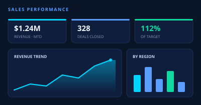
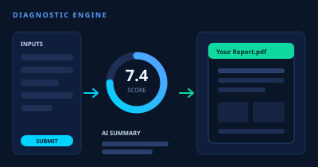
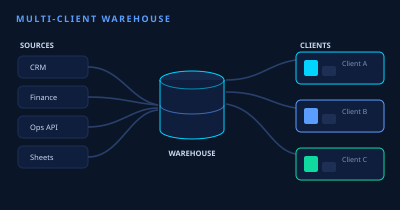

Open for projects · Agra, India · Remote worldwide
I turn messy data into automated clarity
I help operators and founders replace fragile spreadsheets and manual reporting with automated data systems that keep running long after I'm done. Power BI & Fabric for the visible layer, Python and AI APIs for the engine underneath.
Power BI · Microsoft Fabric · Python · OpenAI API · Claude API · Zapier · Power Automate · Google Apps Script · Excel VBA · Snowflake · DAX & M Query · SQL · Make / n8n · Looker Studio · Power BI · Microsoft Fabric · Python · OpenAI API · Claude API · Zapier · Power Automate · Google Apps Script · Excel VBA · Snowflake · DAX & M Query · SQL · Make / n8n · Looker Studio ·
What I Build
Services that solve real problems
Every engagement starts with understanding the system behind the problem — not just the dashboard on top of it.
Business Intelligence
Power BI & Fabric
Executive dashboards connected to live data, built on Fabric lakehouses for real scale.
A sample of what I've built — systems still running and saving time every week.

Illustrative
Power BIFabric
Sales Performance Command Center
Unified CRM, finance, and target data into one automated leadership dashboard with real-time visibility.
Daily automated data refresh
Role-based dashboards per team
Fabric lakehouse backend
OutcomeReplaced 8–10 hours of monthly manual reporting per manager — leadership now sees yesterday's numbers, not last month's.

Illustrative
SheetsPythonOpenAI
Automated Diagnostic Engine
Form submissions trigger a full pipeline — scoring, AI-generated summaries, instant branded PDF delivery.
Form → Sheets → Python pipeline
OpenAI-powered narrative summaries
PDF & email auto-delivery
OutcomeFrom a 12-hour manual report cycle to a branded PDF in the client's inbox within minutes of form submit. 120+ coaches now use it.

Illustrative
FabricSnowflake
Multi-Client Data Warehouse
One warehouse powering dashboards for multiple clients — partitioned data, versioned transforms, shared model.
Shared model with client partitioning
Versioned transformations
Security & access per client
OutcomeNew client dashboards now go live in days instead of the weeks it took before — one shared model, isolated data per client.
How it works
From "this is broken" to a system that runs itself
Every engagement follows the same clear path — no mystery, no endless meetings. Most projects move from first call to live system in 1–3 weeks.
Step 1
Discover
We map the real problem, your data, and the outcome you actually need — not just the dashboard on top.
Step 2
Design
I architect the system — data model, how it flows, and the dashboard or tool that sits on top of it.
Step 3
Build
I build it — pipelines, automation, dashboards, and AI where it genuinely earns its place.
Step 4
Automate & test
Wired to run hands-free, validated end to end, with error handling and alerts built in.
Step 5
Handover
You get a working system, a plain-English walkthrough, and ongoing support if you want it.
About Datavoris
Systems-first. Not just dashboards.
Most businesses don't have a data problem. They have a systems problem. Datavoris fixes the full chain — from how data is captured, to how it flows, to how it's used to make decisions.
Fix the system, not the symptom
I trace the data back to its source and fix what's actually broken.
Business-first thinking
Every decision aligns with a real outcome — revenue, efficiency, or someone's time.
Automation that scales
The systems I build keep running after the engagement ends.
Built for real teams
Non-technical teams can use everything I deliver from day one.
Ankush Gulati
Founder, Datavoris
Started fixing dashboards as a freelancer. Realised the real problem was always the system behind them. Built Datavoris to solve that properly.